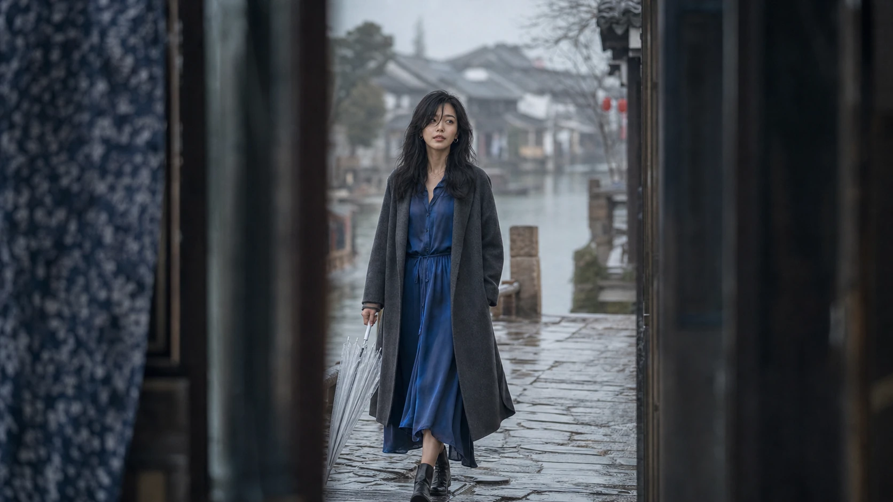
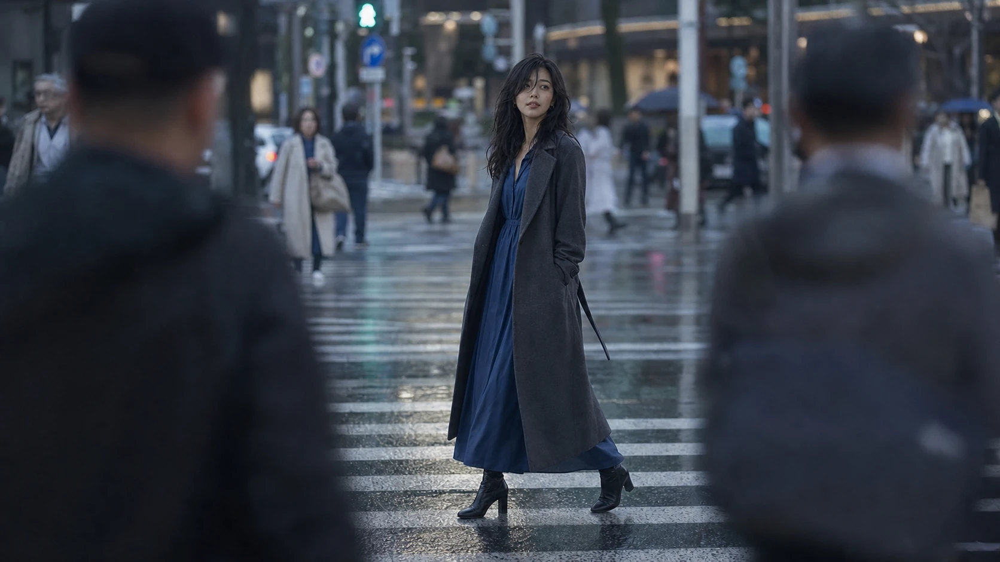
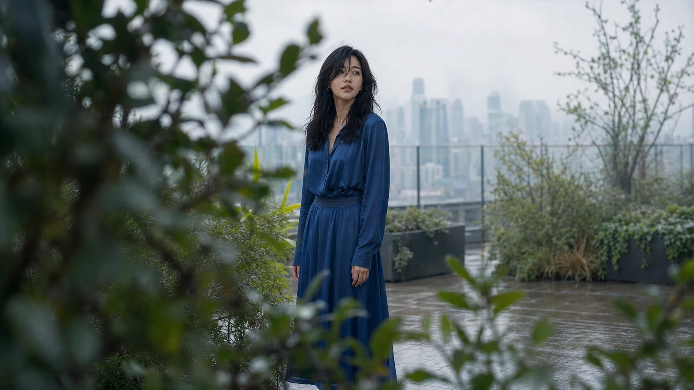

有些人離開以後，並不會立刻從生活裡消失。
他們不再傳來訊息，不再出現在約好的路口，也不再知道我們今天過得好不好。可是很奇怪，真正安靜下來之後，那個人反而像被歲月拆成許多細小的部分，藏進日常最不起眼的地方。也許是一件被風吹起的藍色衣角，也許是公車轉彎時玻璃上的倒影，也許只是陌生人低頭整理頭髮的姿勢，都會讓心裡某個已經很久沒有被碰觸的地方，忽然亮了一下。
那不是錯認，也不是期待。
我們其實知道，迎面走來的人不是他，車窗裡的側臉也不是他。只是記憶有自己的方式，它不按照日曆退場，也不服從我們說過的那些「我已經放下」。它更像光落在水面上的影子，平常看不見，風一吹，便在某個角度重新浮現。
很多人以為，深刻的關係一定要有轟轟烈烈的結尾。應該有一場大雨、一句決絕的話，或者一個轉身離開的背影，讓故事從此被清楚地分成以前與以後。然而更多時候，兩個人只是慢慢失去了同一種生活。起初仍會分享晚餐，後來只剩一句到家了；起初每件小事都想告訴對方，後來打開對話框，卻不知道該從哪裡說起。
沒有人真的做錯什麼。只是忙碌、疲倦與沒有說出口的失望，一點一點搬走了原本放在兩人中間的東西。等到終於察覺，熟悉的房間仍在，桌椅也沒有改變，但彼此已經坐得很遠。

分開後最難處理的，往往不是失去那個人，而是生活裡忽然多出來的空白。曾經習慣有人聽懂一句沒頭沒尾的抱怨，習慣把路邊的小事留給同一個人，習慣在做決定以前，先想像對方會怎麼回答。當這些習慣失去去處，我們才發現，原來一段感情不只住在心裡，也住在每天拿起手機的動作裡，住在經過熟悉店家時放慢的腳步裡。
於是人會在某些晚上反覆回想：如果當時多說一句，是不是就能留下什麼？如果少一點倔強、多一點耐心，故事會不會有另一個版本？這些問題看似在尋找答案，其實只是在替遺憾安排一個可以停靠的位置。因為我們心裡明白，真正讓兩個人走散的，從來不是某一句話，而是那段日子裡，誰都沒有力氣回頭的全部時刻。
時間久了，思念也會改變形狀。它不再每天提醒我們少了誰，而是偶爾借一場雨、一條河、一座陌生城市回來。那一刻並不一定難過，有時甚至很平靜。你看著水面被細雨打開一圈又一圈，忽然記起從前有人說過，他喜歡雨後泥土的味道。你沒有想要打電話，也沒有想查找他的近況，只是站在那裡，承認這個記憶仍然屬於自己。
能夠平靜地想起，或許就是放下最真實的樣子。
放下並不是把過去清理乾淨，也不是努力把一個人的名字說得無關緊要。真正的放下，是允許那段歲月曾經重要，也允許它現在只是一段歲月。我們不必否認當時的真心，才能證明今天過得很好；也不必把對方想成壞人，才能替自己的離開找到理由。
每個人都是帶著自己的限制走進關係裡。有人不擅長承諾，有人害怕衝突，有人總以為來日方長，也有人直到失去以後，才懂得如何表達珍惜。我們曾因對方的笨拙受傷，自己也可能在不知不覺間成為別人記憶裡那個沉默的人。後來願意理解這件事，並不是替傷害開脫，而是不再讓過去只剩下誰對誰錯。
記憶也不是一架忠實的攝影機。它會把爭執的聲音調低，把某個午後的光留得更久；會忘記等待時的不耐煩，卻牢牢記住對方遞來一杯熱飲時的溫度。我們懷念的那個人，常常已經混合了真實、想像與後來的自己。這並不虛假，只是人心在漫長歲月裡，會替無法完成的故事整理出一種能夠繼續攜帶的版本。
所以偶爾覺得「像是見到你」時，不必急著把感覺趕走。那可能不是舊情仍困住我們，而是曾經被一個人好好理解過的自己，正在短暫回來。那個比較願意相信、願意等待，也願意把微小快樂交出去的自己，並沒有隨著關係結束而消失。

城市最擅長製造重逢的錯覺。隔著書店玻璃，看見某個人專心翻頁；穿過下班人潮，聽見一句熟悉的語氣；在紅燈轉綠以前，某個背影剛好停在視線中央。心臟仍可能比理智快半步，但下一秒，我們已經能夠笑著承認，只是相似而已。
那半步並不丟臉。它只是證明，我們曾經很認真地記住一個人。記住他的輪廓、走路的速度、說話時微微偏過頭的習慣。愛過留下的痕跡，不需要靠痛苦才能成立。當它不再要求我們回到原點，它便會從傷口慢慢變成感受世界的一部分。
真正困住人的，往往不是想念本身，而是把想念誤認成一項還沒有完成的任務。彷彿只要心裡仍有波動，就必須做點什麼：重新聯絡、追問原因、把當年的誤會一一解開，或者至少確認對方也沒有忘記。可是有些感情留下來，不是為了催促我們採取行動。它只是提醒，一個人的生命曾經與另一個人靠得很近，而靠近過的地方，本來就會留下溫度。
有些夜裡，舊訊息仍可能被翻開。不是為了從字裡行間找出復合的暗示，而是想看看當時的自己。那個人說話比較直接，笑點很低，也會為了一句沒有及時得到的回覆悶悶不樂。多年後再讀，才發現自己懷念的不只是某段關係，也懷念那個還敢把期待寫得那麼明白的年紀。
成熟並不是從此沒有期待，而是知道期待不能代替兩個人的選擇。愛可以很深，卻不能只靠其中一個人維持；回憶可以很美，也不能因此要求現實回到原來的位置。當一段關係已經走完，最溫柔的做法有時不是再努力一次，而是尊重它停下來的地方，不把後來的寂寞變成重新打擾彼此的理由。
當我們不再逼迫想念給出答案，它反而會慢慢安靜。曾經每次想起都像一場審問，後來只像有人在門外輕輕經過。你聽見腳步，知道那是過去，卻不必開門。屋子裡仍有自己的燈、自己的晚餐和明天要完成的事情，生活不再因為那道聲音停下來。
也許正因如此，後來遇見新的人，我們會更懂得珍惜那些看似平凡的回應。知道一句「我在聽」並不容易，知道有人願意在疲憊時仍然說清楚自己的感受，是多麼珍貴。過去沒有完成的功課，並不一定只能留下遺憾；它也可能讓我們在下一段關係裡，成為一個更誠實、更溫柔的人。
有一天，你會發現自己已經很久沒有計算離開多久，也不再想像對方是否後悔。你開始重新安排週末，買一盆不難照顧的植物，答應朋友臨時的邀約，或者只是把房間的窗簾洗乾淨，讓早晨的光重新進來。這些事情都很小，小到不像任何故事的轉折，但人生真正恢復的時候，本來就很少有配樂與掌聲。
我們總以為，告別是目送一艘船離岸；其實更多時候，告別是終於願意離開碼頭。遠去的船早已看不清了，留在岸上的人卻站了很久，因為不知道轉身後要去哪裡。直到某個清晨才明白，沒有方向也可以先走幾步，生活會在行走之中重新長出道路。
回到自己的日子，不代表那個人從此毫無意義。相反地，正因為不再需要得到回應，我們才有機會真正看見那段相遇留下的東西。也許是學會在下雨時替別人多帶一把傘，也許是懂得沉默的人未必不在乎，也許是終於知道，再深的感情也需要被好好說出來。
這些改變會留在往後的每一天。它們沒有署名，卻讓我們成為今天的樣子。從這個角度看，離開並沒有把一切帶走。相遇曾經給過的溫柔，早已進入我們的性格、選擇和待人方式裡。那個人不在身邊，但生命確實因為他來過而稍微改變。
後來再想起時，畫面已經不那麼清楚。記得的可能不是臉，而是一種被理解的感覺；不是說過哪些話，而是某段路上有人與自己並肩。細節逐漸退遠，留下來的反而更接近那段關係真正的重量。它不再壓著人往下沉，而像口袋裡一枚被磨平的石頭，偶爾碰到，知道它還在，卻不妨礙我們走路。
我們也終於不再要求每一次相遇都有結果。有人陪你走過一季，已經完成了他的意義；有人讓你看見自己的軟弱，也可能是一種提醒。故事沒有走到想像中的終點，不代表沿途全都白費。那些真心相待的時刻，在發生時就已經成立，不需要後來的永遠替它證明。
至於偶爾仍會出現的想念，就讓它來吧。讓它坐一會兒，喝完一杯溫水，看窗外的天色慢慢改變。不要追問它是不是代表還愛，也不要急著替自己下結論。人可以懷念一段過去，同時認真生活；可以記得一個人，同時不再等他回來。
那不是矛盾，而是心終於變得足夠寬，能同時容納曾經與現在。曾經是真的，離開也是真的；遺憾是真的，今天重新獲得的平靜也是真的。所有感受不必互相推翻，它們只是在人生不同的時間裡，各自完成自己的部分。

於是，「如見你」不再是一種等待。它只是走過長街時忽然吹來的風，是山色轉淡時短暫浮起的名字，是我們看見一個溫柔背影，仍願意相信人與人之間存在真心的原因。
世界偶爾仍像你，並不是因為我停在原地，而是因為你曾經參與過我看世界的方式。那些一起看過的雨、錯過的花期、沒有說完的話，都已經被時間放回更寬廣的風景裡。它們不再只屬於失去，也屬於我後來理解愛、理解離開、理解自己的過程。
如果有一天，我又在某個轉角覺得像是見到你，我想我不會追上去。我會停一下，看那個身影走進人群，然後繼續自己的路。
不是因為忘了。
而是終於知道，曾經遇見，已經足夠。